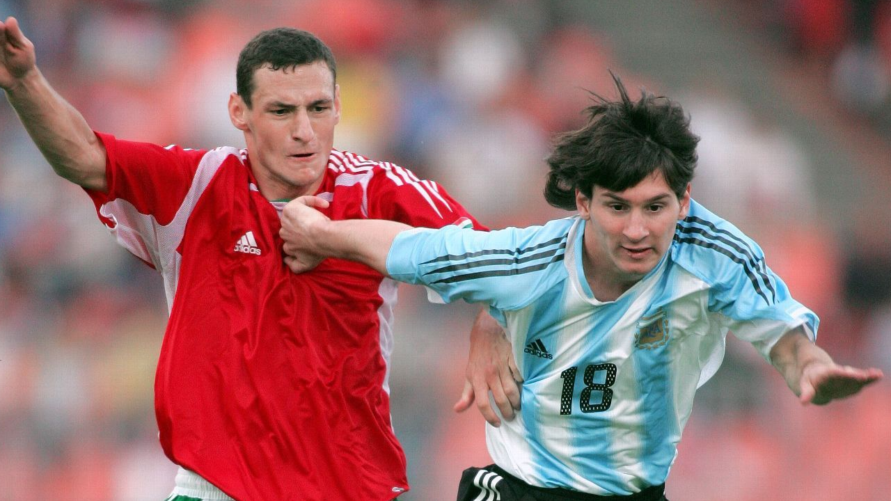

AMISTOSO INTERNACIONAL
Foto: Getty
Debut de pocos segundos
Un debut de pocos segundos
Con 18 años, entró ante Hungría, en Budapest, y fue expulsado casi enseguida por un manotazo. Salió llorando hacia el vestuario. Nadie imaginaba que aquel chico terminaría siendo el futbolista con más partidos y más goles en la historia de la Selección.